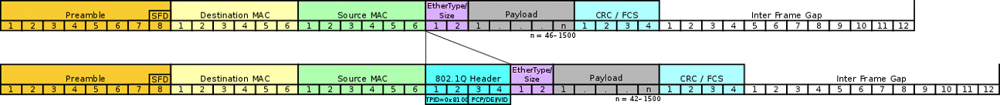

VLAN, princip, použití. Trunk porty, protokol 802.1q, VTP technologie
802.1Q
Síťový standard podporující VLAN (Virtual Local Area Network) na IEEE 802.3 ethernet síti. Standard definuje VLAN tagging pro Ethernet frames doprovázející proceduramy pro operace s takto upravenými frames.

802.1Q hlavička - skládá se ze 2 oktetů složených z PCP/CFI/VID
Tag protocol identifier (TPID): jedná se o takzvaný identifikátor typu rámce a obsahuje hodnotu 0x8100. Pro zařízení která pracují s VLAN je to identifikátor toho, že další dva oktety ponesou informace o VLAN.
Priority Code Point (PCP) - PCP obsahuje tříbitovou hodnotu uživatelské priority rámce. Priorita určuje do jaké fronty daný rámec zařízení zařadí. Pro tento účel měl vzniknout standard 802.1p
Canonical Format Indicator(CFI) - CFI je identifikátor, který říká v jakém pořadí je přenášen rámec. Může se přenášet kanonickým tvarem (little endian), který se používá v ethernetu, nebo nekanonickým (big endian), který se používá v Token Ringu a FDDI. Hodnota příznaku je negována takže pokud je příznak 0, je rámec přenášen kanonickým tvarem.
VLAN Identifier (VID) - VID je dvanáctibitové číslo, které nám identifikuje číslo VLANu, Z toho plyne že je možné mít maximálnš 4096 různých VLANů, ale z nich jsou ještě dvě čísla rezervována a to 0xFFF(4095) A 0x000(0)
VLAN
Benefit
Description
Smaller broadcast domains
Dividing a network into VLANs reduces the number of devices in the broadcast domain.
Improved security
Only users in the same VLAN can communicate together.
Only users in the same VLAN can communicate without the services of a router. The router may have a security feature such as an access control list to restrict communications between VLANs.
Improved IT efficiency
VLANs simplify network management because users with similar network requirements can be configured on the same VLAN.
VLANs can be named to make them easier to identify.
Reduced cost
VLANs reduce the need for expensive network upgrades and use the existing bandwith and uplinks more efficiently, resulting in cost savings.
Better Performance
Smaller broadcast domains reduce unnecessary traffic on the network and improve performance.
Simpler project and application management
VLANs aggregate users and network devices to support business or geographic requirements.
Having separate functions makes managing a project or working with a specialized application easier; and example of such and application is an e-learning development platform for faculty.
Obvyklý stav na VLAN používajícím switchi je, že vybrané porty (z pohledu architektury malé procento) pracují v režimu trunk a ostatní jsou pevně zařazeny do některé konkrétní VLAN, jež se identifikují číslem, pomocně jménem pevně velice často ve smyslu statické konfigurace zařízení, mimo reálnou praxi se zařazení může "pevně" nastavit při každém zapojení zařízení do portu (připojení kabelu), pevně tedy pro určitý následující časový úsek; v tomto hraje roli termín VLAN Management Policy server (VMPS).
Defaultní VLAN
Na cisco zařízeních se jedná o VLAN 1. Z toho důvodu všechny porty na switch spadají do VLAN1 defaultně pokud není nastaveno jinak.
Všechny porty spadajá do VLAN1 defaultně.
Native VLAN je VLAN1 defaultně
Management VLAN je VLAN1 defaultně
VLAN 1 nemůže být smazána nebo přejmenována
Pro rozpoznání z jaké VLAN frame pochází tak 802.1Q Trunk port vloží 4 bytový tag do ethernet frame hlavičky.
DATA VLAN
Jedná se o VLAN nastavenou specificky pro user-generated traffic. Někdy se nazívá také jako USER VLAN protože rozděluje síť na zařízení a usery. Voice a management by neměl být povolen na data VLAN.
Native VLAN
Jedná se o speciální druh VLAN kde cestují packety které nejsou otagované žádnou VLAN. Podporuje traffic jak z VLANů tak mimo ně.
Management VLAN
Jedná se o DATA VLAN nastavenou výhradně pro network management traffic jako například SSH, Telnet, HTTPS, HTTP, a SNMP. Defaultně je nastavená jako VLAN 1.
Trunk
Jedná se o point-to-point spojení mezi síťovými zařízeními které pracují na více jak jedné VLAN. VLAN trunk nepatří k nějaké specifické VLAN naopak jedná se o propojení více VLAN mezi switchy a routery.
Konfigurace
Normal range VLANs on these switches are numbered 1 to 1,005 and extended large VLANs are numbered 1.006 to 4,094,
VLAN CREATE
S1(config)# vlan 20
S1(config-vlan)# name Student
S1(config-vlan)# end
no switchport access vlan // Changes membership of the port back to the default VLAN 1
no switchport trunk allowed vlan // disables trunk
no switchport trunk native vlan // disables native trunk
Dynamic trunk protocol
Umožňuje zrychlit konfigurační proces pro správce sítě. Porty můžou být nastavené jako trunking, nontrunking nebo negotiate trunking s příbuzným zařízením. The default DTP configuration for Cisco Catalyst switches is dynamic auto.
Pokud jsou porty propojující dva switche nastavené aby ignorovaly DTP advertisements za pomocí mode trunk a nonegotiate přikazů, porty zůstanou v trunk mode.
Puts the interface (access port) into permanent nontrunking mode and negotiates to convert the link into a nontrunk link.
The interface becomes a nontrunk interface, regardless of whether the neighboring interface is a trunk interface.
dynamic auto
Makes the interface able to convert the link to a trunk link.
The interface becomes a trunk interface if the neighboring interface is set to trunk or desirable mode.
The default switchport mode for all Ethernet interfaces is dynamic auto.
dynamic desirable
Makes the interface actively attempt to convert the link to a trunk link.
The interface becomes a trunk interface if the neighboring interface is set to trunk, desirable, or dynamic auto mode.
trunk
Puts the interface into permanent trunking mode and negotiates to convert the neighboring link into a trunk link.
The interface becomes a trunk interface even if the neighboring interface is not a trunk interface.
Dynamic Auto
Dynamic Desirable
Trunk
Access
Dynamic Auto
Access
Trunk
Trunk
Access
Dynamic desirable
Trunk
Trunk
Trunk
Access
Trunk
Trunk
Trunk
Trunk
Limited connectivity
Access
Access
Access
Limited connectivity
Access
VTP
VLAN Trunking Protocol (VTP) je proprietární síťový protokol společnosti Cisco, který zajišťuje přenášení čísel a názvů VLAN mezi switchy zapojenými do jedné domény, což usnadňuje jejich správu. Protokol VTP je dostupný na většině Cisco switchů typu Catalyst.
Při návrhu zvolí správce sítě jeden ze switchů jako server, ostatní mohou být typu client nebo transparent, a také zvolené přepínače přiřadí do domény, která je označena textovým řetězcem. Jakákoliv změna v nastavení VLAN na switchy typu server (přidání, přejmenování, smazání), je přenesena na ostatní switche ve stejné doméně - switche typu client tyto změny použijí na svou tabulku VLAN v paměti, přepínače typu transparent je jen rozešlou na další switche. U swithců client nelze vytvářet VLAN, ani měnit existující.
Switche mezi sebou komunikují zasíláním tří druhů paketů na multicastovou MAC adresu 01-00-0C-CC-CC-CC:
Summary advertisements: Tento paket je zasílán ve výchozím nastavením každých 5 minut a obsahuje jméno domény, číslo revize a čas poslední změny. Při obdržení této zprávy switch zkontroluje, zda paket obsahuje stejný název domény jako switch a také, zda číslo revize je vyšší než číslo revize z poslední obdržené Summary advertisements. V tom případě odešle zpět paket Advertisement requests, jinak zprávu ignoruje. Tyto zprávy je možno zaheslovat, pro správnou funkci je potřeba, aby na všech přepínačích v jedné doméně bylo nastaveno stejné heslo.
Subset advertisements: Je odesílán směrem ze severu na klienta v případě změn provedených v nastavení VLAN na serveru. Obsauje název domény, číslo revize a informace o jedné nebo více VLAN - číslo, stav (aktivní/neaktivní), jméno a velikost MTU.
Advertisement requests: Paket switch zasílá, pokud byl resetován, správce změnil doménové jméno nebo jako odpověď na paket Summary advertisements, který obsahoval vyšší číslo revize. Switch, který tuto zprávu obdrží, odešle zpět Summary advertisements následovaný Subset advertisements.
Další funkcí protokolu je VTP Pruning. který zabrání zbytečnému odesílání všesměrových (broadcast) paketů z určité VLAN na switche, které nemají aktivní žádné zařízení na této VLAN. Tuto funkci je potřeba aktivovat pouze na switchy typu server, na ostatní ve stejné doméně je toto nastavení přeneseno automaticky.
Voice VLAN
A separate VLAN is needed to support Voice over IP (VoIP). VoIP traffic requires the following:
Assured bandwidth to ensure voice quality
Transmission priority over other types of network traffic
Ability to be routed around congested areas on the network
Delay od less than 150 ms across the network
To meet these requirements, the entire network has to be designed to support VoIP.